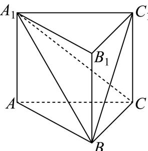

填空题
按本区原卷题号顺序排列。
松江 · 第1题 ★☆☆☆☆ · 教师预估
已知集合A = {−1, 0, 1, 2}, B={x∣y=log2x} ，则A ∩ B = .
考点：对数定义域与交集。
难度依据：集合交集与对数定义域；直接运用定义或基础公式，推理链短
核查说明：已人工阅读完整底稿题干及原解，未逐页对照正式PDF，分类不等于数学终审。
展开答案与解析
松江 · 第2题 ★☆☆☆☆ · 教师预估
抛物线y2 = 8x的焦点到准线的距离是
考点：抛物线参数与焦准距离。
难度依据：抛物线焦准距离；直接运用定义或基础公式，推理链短
核查说明：已人工阅读完整底稿题干及原解，未逐页对照正式PDF，分类不等于数学终审。
展开答案与解析
松江 · 第3题 ★☆☆☆☆ · 教师预估
若复数z满足 z1+i=i （其中i是虚数单位），则|z| = .
考点：复数运算与模。
难度依据：复数除法与模；直接运用定义或基础公式，推理链短
核查说明：已人工阅读完整底稿题干及原解，未逐页对照正式PDF，分类不等于数学终审。
展开答案与解析
松江 · 第4题 ★☆☆☆☆ · 教师预估
已知空间向量 =(2,m,3),b=(−4,2,2) ，若 ⋅a⊥b ，则m =
考点：数量积为零求参数。
难度依据：空间向量垂直的坐标条件；直接运用定义或基础公式，推理链短
核查说明：已人工阅读完整底稿题干及原解，未逐页对照正式PDF，分类不等于数学终审。
展开答案与解析
松江 · 第5题 ★★☆☆☆ · 教师预估
本题资料或解析有待核事项，预览不可作为已审定成品。
(3x2+x1) 6 的二项展开式中的常数项为
考点：二项通项与常数项。
难度依据：二项展开常数项；需一次转化并结合定义域或几何条件计算
核查说明：题干6次方脱离上标，解析12-3r误为512-3r，需修复排版。；已人工阅读完整底稿题干及原解，未逐页对照正式PDF，分类不等于数学终审。
展开答案与解析
松江 · 第6题 ★★☆☆☆ · 教师预估
本题资料或解析有待核事项，预览不可作为已审定成品。
根据如表所示的样本数据，用最小二乘法求得线性回归方程为 y=a^x+10.3 ，则回归系数a^的值为
| x |
6 |
8 |
9 |
10 |
12 |
| y |
6 |
5 |
4 |
3 |
2 |
考点：回归直线过样本中心。
难度依据：线性回归与样本中心；需一次转化并结合定义域或几何条件计算
核查说明：题干所指样本数据表未保留，需补原表。；已人工阅读完整底稿题干及原解，未逐页对照正式PDF，分类不等于数学终审。
展开答案与解析
松江 · 第7题 ★★☆☆☆ · 教师预估
有4辆车停放在5个并排车位上，客车甲车体较宽，停放时需要占两个车位，并且乙车与客车甲相邻停放，则共有 种不同的停放方法.
考点：捆绑排列与相邻条件。
难度依据：相邻排列的捆绑法；需一次转化并结合定义域或几何条件计算
核查说明：已人工阅读完整底稿题干及原解，未逐页对照正式PDF，分类不等于数学终审。
展开答案与解析
松江 · 第8题 ★★☆☆☆ · 教师预估
在定向越野活动中，测得甲在乙北偏东80∘的方向，甲乙两人间的距离为2km，丙在乙北偏西40∘的方向，甲丙两人间的距离为 7km ，则乙丙两人间的距离为 km.
考点：方向角转化与余弦定理。
难度依据：方向角与余弦定理；需一次转化并结合定义域或几何条件计算
核查说明：已人工阅读完整底稿题干及原解，未逐页对照正式PDF，分类不等于数学终审。
展开答案与解析

松江 · 第9题 ★★★☆☆ · 教师预估
已知点P为直线l: x+y+1=0. 上的点，过点P作圆N: (x−1)2+(y−1)2=1 的切线PA，切点为A，则 cos∠PNA 最大值为
考点：圆切线构造和距离最值。
难度依据：切线与点到直线距离最值；需连接多个条件或多步模型转化
核查说明：已人工阅读完整底稿题干及原解，未逐页对照正式PDF，分类不等于数学终审。
展开答案与解析
松江 · 第10题 ★★★★☆ · 教师预估
本题资料或解析有待核事项，预览不可作为已审定成品。
如图在三棱锥 P−ABC 中，PA、PB、PC两两垂直，且 PA=3,PB=2,PC=1 ，设M是底面ABC内一点，定义 f(M)=(m,n,p) ，其中 m,n,p 分别表示三棱锥 M−PAB. ，三棱锥 M−PBC 三棱锥 M−PCA 的体积.若 f(M)=(32,x,y) ，且 xa+y1≥ 12恒成立，则正实数 {a 的最小值为

考点：体积和约束与基本不等式。
难度依据：棱锥分割体积定义；需参数分类、构造递推或综合最值分析
核查说明：底面内点是否排除边界及分母非零应回核原卷，解析按x,y>0处理。；已人工阅读完整底稿题干及原解，未逐页对照正式PDF，分类不等于数学终审。
展开答案与解析
松江 · 第11题 ★★★★☆ · 教师预估
设向量 ⋅a=(x1,y1),b=(x2,y2) ，记 ?a⋆b=x1x2−y1y2 .若点 A1, A2, A3 为圆C：
x2+y2+4x−2y=0. 上任意三点，且满足 A1A2⊥A2A3 ，则 OA1⋆OA2+OA2⋆OA3 的取值范围是
考点：新运算化简、圆上线性函数范围。
难度依据：向量新运算；需参数分类、构造递推或综合最值分析
核查说明：已人工阅读完整底稿题干及原解，未逐页对照正式PDF，分类不等于数学终审。
展开答案与解析
松江 · 第12题 ★★★★☆ · 教师预估
本题资料或解析有待核事项，预览不可作为已审定成品。
设 a∈R，若函数
f(x)={sin(2πx−2πa),x2−2(a+1)x+a2+5,x<a,x≥a
在区间 (0,+∞) 内恰好有6个零点，则 a 的取值范围是________。
考点：正弦与二次函数分段零点计数。
难度依据：含参分段函数零点计数；需参数分类、构造递推或综合最值分析
核查说明：源解把二次分支只有一个零点仅等同于重根，漏考虑a>5/2时一根落于x<a；例如a=3时正弦分支5根、二次分支1根，共6根，与源答(2,5/2]冲突。需核正式题干后修解。；已人工阅读完整底稿题干及原解，未逐页对照正式PDF，分类不等于数学终审。
展开答案与解析
选择题
按本区原卷题号顺序排列。
松江 · 第13题 ★★☆☆☆ · 教师预估
已知 1a,b,c,d∈R ，则 ⋅¨⋅a+c>b+d" 是 sa>b 且 .c>d" 的（ ）
A. 充分不必要条件
B. 必要不充分条件
C. 充要条件
D. 既不充分也不必要条件
考点：不等式相加与条件关系。
难度依据：充分必要条件；需一次转化并结合定义域或几何条件计算
核查说明：已人工阅读完整底稿题干及原解，未逐页对照正式PDF，分类不等于数学终审。
展开答案与解析
松江 · 第14题 ★☆☆☆☆ · 教师预估
下列函数中，在区间(0, +∞)上为严格增函数的奇函数的是（ ）
A. y=ln∣x∣
B. y=∣x−1∣
C. y=2x1
D. y=−x1
考点：基本函数的奇偶与单调。
难度依据：函数奇偶性和单调性；直接运用定义或基础公式，推理链短
核查说明：已人工阅读完整底稿题干及原解，未逐页对照正式PDF，分类不等于数学终审。
展开答案与解析
松江 · 第15题 ★★★☆☆ · 教师预估
在正三棱柱 ABC−A1B1C1 中， AB=AA1=1 ，动点P满足 BP=λBC+BB1,λ∈(0 , 1) ，则下列几何体体积为定值的是（ ）

A. 四棱锥 P−A1ABB1
B. 四棱锥 P−A1ACC1
C. 三棱锥 P−A1B1C1
D. 三棱锥 P−A1BC
考点：动点轨迹与线面平行定高。
难度依据：棱柱中动点与定体积；需连接多个条件或多步模型转化
核查说明：已人工阅读完整底稿题干及原解，未逐页对照正式PDF，分类不等于数学终审。
展开答案与解析
松江 · 第16题 ★★★★☆ · 教师预估
本题资料或解析有待核事项，预览不可作为已审定成品。
定义在 (0,+∞) 上的函数 ⋅y=f(x) 满足 f(x+1)=f(x)−x ，当 0<x≤1H] ， f(x)=x−x+1 有以下两个命题：
①当n为正整数时， f(n)=2−n2+n+2 ；
②若函数 y=f(x) 在区间(0,k]内有3个极大值点，则k的取值范围是 [3673,3)
则以下选项正确的是（ ）
A. ①是真命题，②是假命题
B. 两个都是真命题
C. ①是假命题，②是真命题
D. 两个都是假命题
考点：递推函数各区间极值与整数值。
难度依据：递推函数分段表达与极值；需参数分类、构造递推或综合最值分析
核查说明：函数可不连续，端点极大值定义和截断区间口径须注意；原解局部导数不等式有字母OCR错误。；已人工阅读完整底稿题干及原解，未逐页对照正式PDF，分类不等于数学终审。
展开答案与解析
解答题
按本区原卷题号顺序排列。
松江 · 第17题 ★★★☆☆ · 教师预估
本题资料或解析有待核事项，预览不可作为已审定成品。
已知函数 :y=Asin(2x+φ),A>0,0<φ<π: ，当 x=6π 时函数取得最大值4， i∃y=f(x)
(1) (6分)求函数 ⋅y=f(x) 的表达式；
(2) (8分)若数列 {an} 为等差数列， a2=f(0),a4=f(6π) Ebn=2an ，求数列 {bn} 的前n项和 Sn
考点：(1)最大值确定振幅初相；(2)等差数列转等比数列并求和。
难度依据：正弦函数解析式；需连接多个条件或多步模型转化
核查说明：题干f(x)标记位置与符号OCR损坏，需整理原式。；已人工阅读完整底稿题干及原解，未逐页对照正式PDF，分类不等于数学终审。
展开答案与解析

松江 · 第18题 ★★★☆☆ · 教师预估
已知梯形PBCD中， PD//BC ，E为PD上的一点且 BE⊥PD PE=BE=1 BC=21ED ，将△PBE 沿BE翻折使得二面角P−BE−C的平面角为θ，连接PC、PD，F为棱PD的中点.

(1) (6分)求证： FC// 平面PBE；
(2) (8分)当 ∣θ=32π 时，求直线FC和平面BCDE所成角的大小.
考点：(1)线面平行证明；(2)翻折后线面角。
难度依据：翻折模型与线面角；需连接多个条件或多步模型转化
核查说明：已人工阅读完整底稿题干及原解，未逐页对照正式PDF，分类不等于数学终审。
展开答案与解析
松江 · 第19题 ★★★★☆ · 教师预估
某校组织学生在周末时间利用DeepSeek等人工智能平台进行线上学习，但要求学生学习时间不超过4小时．现从该校高三学生某周末的线上学习时间统计数据中，随机抽取100个学生的学习时间进行分析，绘制成如下频率分布直方图．以抽取的100个学生该周末线上学习时间作为样本，估计该校高三年级全体学生周末线上学习时间的情况

(1) (6分)试估计该校高三学生周末线上学习时间的平均数x及中位数x （注：为了计算均值，可–用区间的中点值给区间内的每个数据赋值）；
(2) (8分)现从全部高三年级学生中随机抽取n人，若其中有4人周末线上学习的时间不小于3小时的可能性最大，求n的值.
考点：(1)分组均值和中位数；(2)二项概率随试验次数变化的最值。
难度依据：频率直方图与二项概率最值；需参数分类、构造递推或综合最值分析
核查说明：已人工阅读完整底稿题干及原解，未逐页对照正式PDF，分类不等于数学终审。
展开答案与解析
松江 · 第20题 ★★★★★ · 教师预估
本题资料或解析有待核事项，预览不可作为已审定成品。
已知椭圆Γ: a2x2+b2y2=1(a>b>0) 的左右焦点分别为 F1, F2, ，上下顶点分别为 B1. 、
B2,△B1F1F2 是面积为 3 的正三角形，过焦点的直线交椭圆Γ于P、Q两点（P、Q分别在第一、四象限）.
(1) (4分)求椭圆Γ的离心率；
(2) (6分)已知点 M(0,m), m>0 ，求椭圆Γ上的动点R到点M的最大距离；
(3) (8分)求四边形 B1B2QI P面积的取值范围.
考点：(1)等边三角形求离心率；(2)动点到定点最大距离；(3)焦点弦四边形面积范围。
难度依据：椭圆焦点弦与面积范围；需处理新定义或多对象联动，包含一般性证明及边界
核查说明：题干四边形名称混入I，解析三角形面积sqrt3/2与题设sqrt3不符但后续参数按sqrt3计算；距离平方负号与韦达负号丢失，须逐式校核。；已人工阅读完整底稿题干及原解，未逐页对照正式PDF，分类不等于数学终审。
展开答案与解析
松江 · 第21题 ★★★★☆ · 教师预估
本题资料或解析有待核事项，预览不可作为已审定成品。
已知f ⋅(x)=ln(x−1)+x2a−34,a∈R.
(1) (4分)若x = 4是函数 y=f(x) 的一个极值点，求曲线y = f(x)在点P (4, f (4))处的切线方程；
(2) (6分)讨论函数 y=f(x) 的单调性；
(3) (8分)已知实数 [a=0, 若点A (x1, y1)、 B(x2,y2)(x1<x2) )是曲线 μ˙y=f(x) 上两点，直线AB的斜率为k，求证： x1<k1+k<x2
考点：(1)极值点与切线；(2)含参导数分类；(3)割线斜率与对数不等式。
难度依据：对数函数切线与含参单调；需参数分类、构造递推或综合最值分析
核查说明：解析第一问导数分式、第三问割线分母及函数名有OCR损坏，需逐式修复。；已人工阅读完整底稿题干及原解，未逐页对照正式PDF，分类不等于数学终审。
展开答案与解析